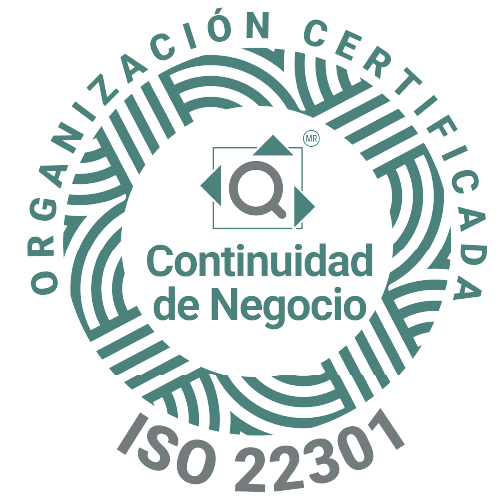

SUS CLIENTES NO LLAMAN PARA CONVERSAR.
LLAMAN PARA RESOLVER.
Potenciamos la experiencia del cliente en operaciones de alto volumen integrando inteligencia artificial, gobernanza automatizada y flujos de trabajo eficientes de inicio a fin.
+20 años
Trayectoria
-65%
Costo operativo
-80%
Ciclo de gestión
99.6%
Precisión de datos
TECNOLOGÍA APLICADA A LA
EXPERIENCIA DEL CLIENTE
Más de 20 años liderando la experiencia del cliente y la inteligencia artificial aplicada en México y EE. UU. (2005 - 2026).
No somos un centro de contacto convencional. Somos un socio tecnológico y operativo que impulsa la excelencia para marcas líderes en Norteamérica.
Mapa de sedes operativas
Binacional EE. UU. / México
Optimización del talento humano con IA: Operación calibrada a más de 650 especialistas de alto desempeño.
SEGURIDAD INTEGRAL Y CERTIFICACIONES AUDITADAS
Telat Group opera bajo sistemas de gestión internacionales auditados, marcos de cumplimiento normativo y certificaciones institucionales que garantizan blindaje legal, técnico y operativo integral.

ISO 9001:2015
Estándares auditados de calidad, consistencia en el servicio y mejora continua.

ISO 18295-1:2017
Referente internacional específico para centros de contacto, bienestar del agente y métricas operativas.

Modelo Global CIC v3.0
Rigurosa acreditación en gestión de relaciones con clientes y ejecución operativa otorgada por el IMT.

ISO/IEC 27001:2022
Ciberseguridad robusta, privacidad de datos, control de accesos y protección de información confidencial.

PCI-DSS v4.0
Controles estrictos de acceso, canales cifrados y cero retención de datos sensibles de tarjetahabientes.

ISO/IEC 20000-1:2018
Gobernanza de infraestructura alineada con ITIL, mesas de ayuda niveles 1/2/3 y seguimiento de incidentes.

ISO 22301:2019
Recuperación resiliente ante desastres y conmutación de telefonía entre CDMX, Ciudad Juárez y El Paso.

ISO 37001:2016
Ética corporativa sin concesiones, estricto apego legal y protocolos de tolerancia cero a la corrupción.

Distintivo ESR 2026
Reconocimiento a salarios competitivos, bienestar del colaborador, inclusión y sustentabilidad comunitaria.